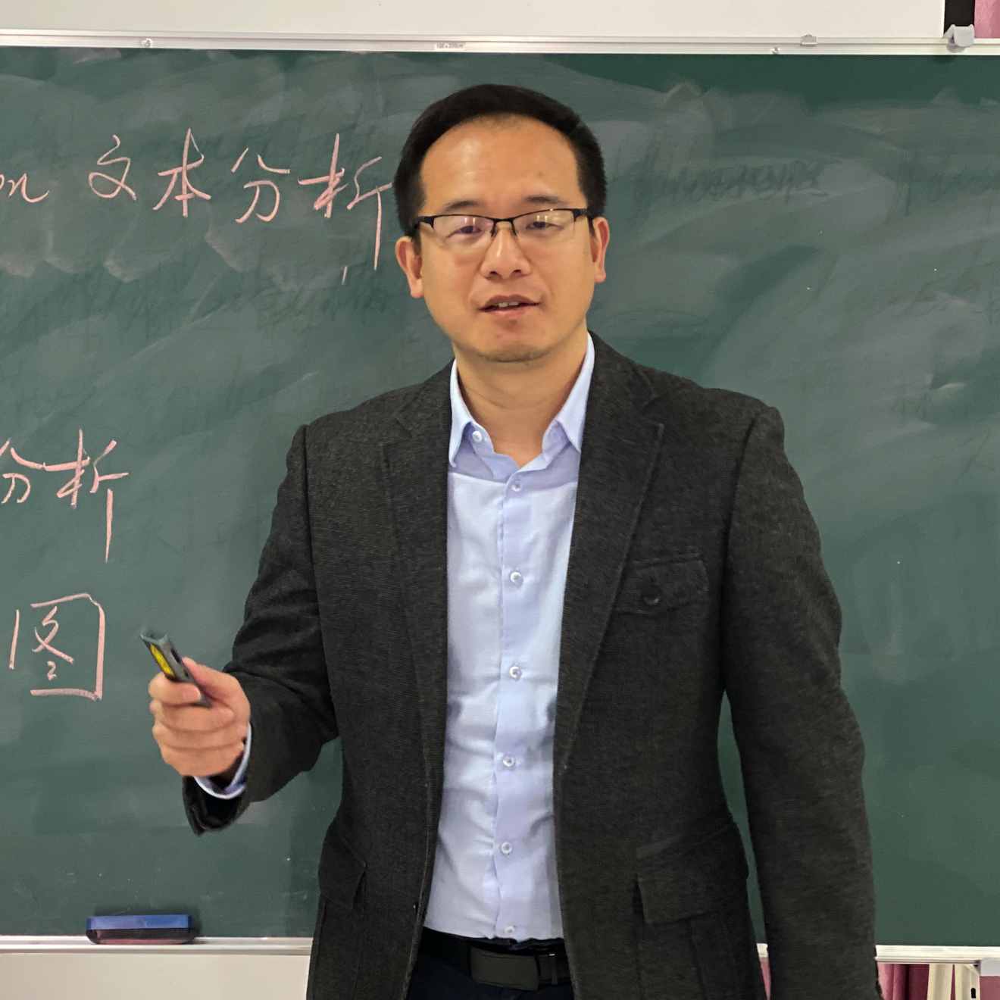
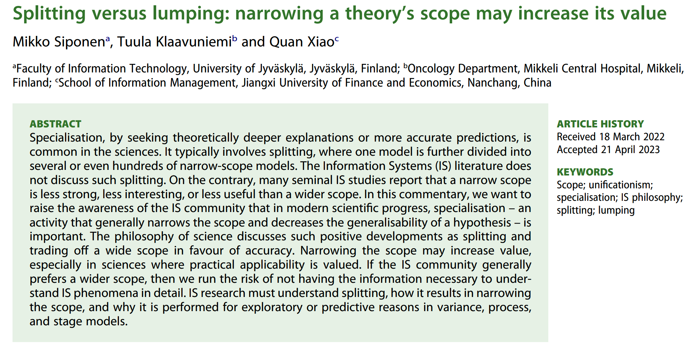
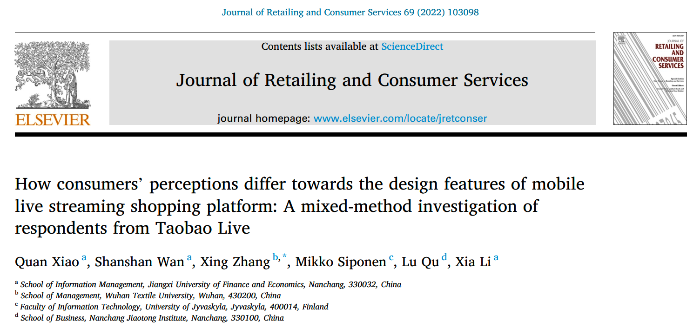
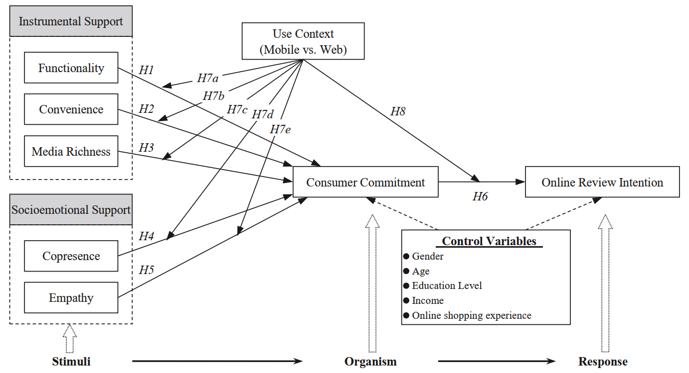
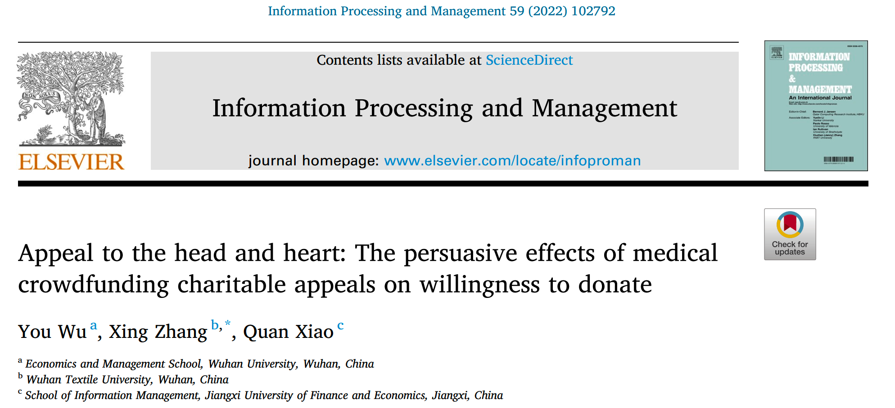
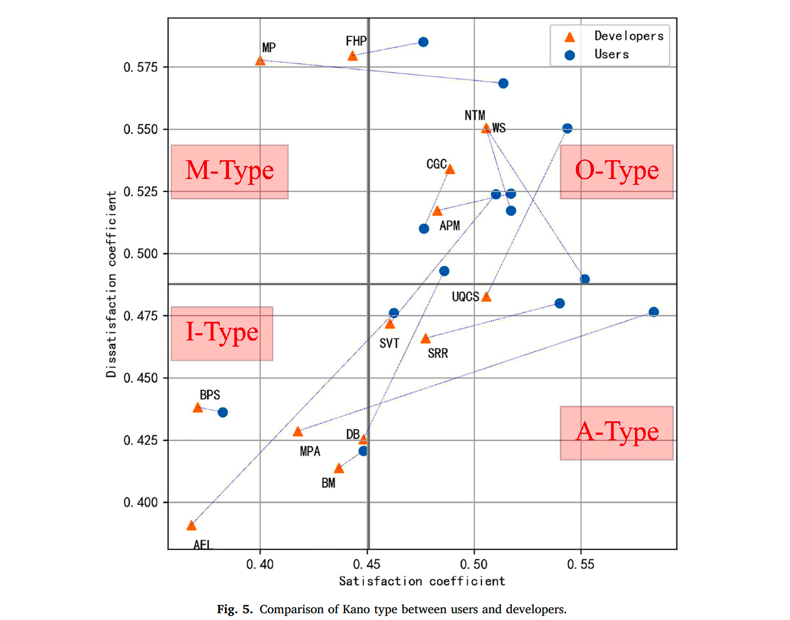
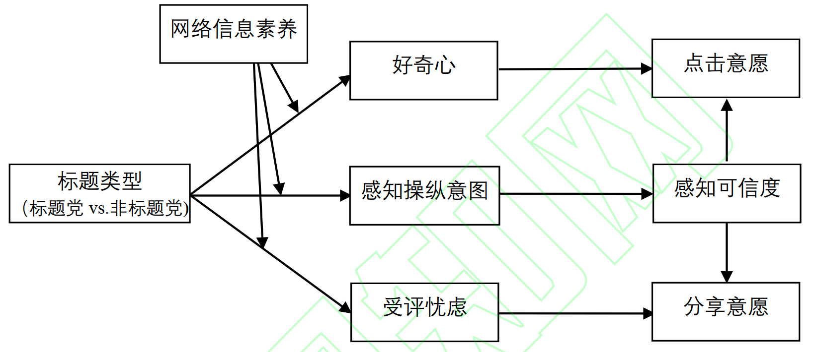

Xia LIZhanyu ZHANG
Xia LIZhanyu ZHANG Weiling HUANGLinbing JIANGShanshan WAN (graduated)Ziyu Fan (graduated)Kuangzheng MAO (graduated)
Weiling HUANGLinbing JIANGShanshan WAN (graduated)Ziyu Fan (graduated)Kuangzheng MAO (graduated)
Quan XIAO |
 |
Professor (Full) School of Information Management Jiangxi University of Finance and Economics |
Two graduate students (Xia LI and Kuangzheng MAO) received their master's degrees in June 2023, congratulations!
A paper from our group have been accepted in June 2023 by Journal of the Association for Information Science and Technology, the FMS A rank Journal.
A paper from our group have been published in May 2023 by European Journal of Information Systems, the FMS A rank Journal.
| In English: | |
|  | Siponen M., Klaavuniemi T., Xiao Q*. "Splitting versus lumping: Narrowing a theory’s scope may increase its value". European Journal of Information Systems, 2023.[pdf] [doi] |
|  | Xiao Q*, Wan S., Zhang X.*, Siponen M., Qu L,, Li X. "How consumers’ perceptions differ towards the design features of mobile live streaming shopping platform: A mixed-method investigation of respondents from Taobao Live". Journal of Retailing and Consumer Services, 2022.[pdf] [doi] |
|  | Xiao Q*, Siponen M., Zhang X.*, Lu F., Chen S., Mao M. "Impacts of platform design on consumer commitment and online review intention: Does use context matter in dual-platform e-commerce?". Internet Research, 2022.[pdf] [doi] |
|  | Wu Y., Zhang X.*, Xiao Q. "Appeal to the head and heart: The persuasive effects of medical crowdfunding charitable appeals on willingness to donate". Information Processing and Management, 2022.[pdf] [doi] |
|  | Xiao Q. "Understanding the asymmetric perceptions of smartphone security from security feature perspective: A comparative study". Telematics and Informatics, 2021.[pdf] [doi] |
| In Chinese: | |
|  | Zhang X., Tang Y., Wang Y., Xiao Q.* "It starts with curiosity and ends with worry: The double-edged effects of 'clickbait' on social media users' clicks and shares". Nankai Business Review, 2023.[pdf] [url] |
Reviewers
| Internet Research (SCI/SSCI Q1) |
| Information Processing and Management (SCI/SSCI Q1) |
| Financial Innovation (SSCI Q1) |
| Technological Forecasting and Social Change (SSCI Q1) |
| Journal of Enterprise Information Management (SSCI Q1) |
| Journal of Retailing and Consumer Services (SSCI Q1) |
| Journal of Medical Internet Research (SCI Q1) |
| Journal of Organizational and End User Computing (SSCI Q1) |
| Journal of Management Science and Engineering |
Social works
| Visiting Researcher |
| Faculty of Information Technology |
| University of Jyvaskyla (Finland) |
| Xia LI |
Xiaojie WANG | Zhanyu ZHANG |
Yang WU | Weiling HUANG |
Linbing JIANG |
| Kexin ZHANG | Jiao DING | Yongyou ZHENG | Shun LI (graduated) | Shanshan WAN (graduated) |
Ziyu Fan (graduated) |
| Kuangzheng MAO (graduated) |
|||||

|